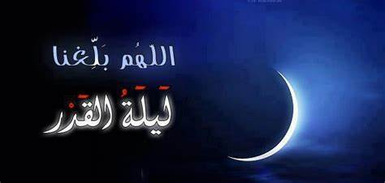
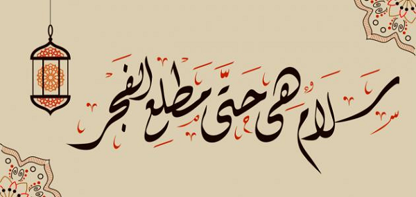
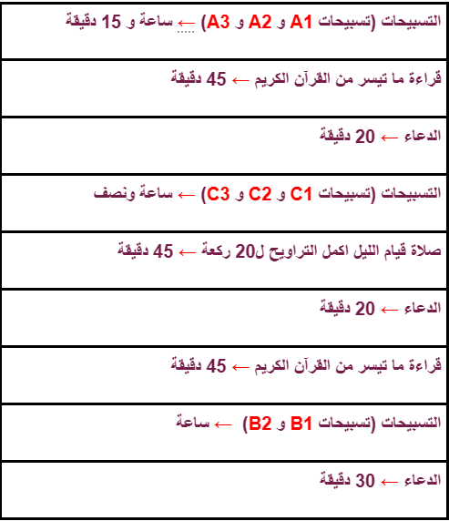

ليلة القدر خير من الف شهر

نحن نرحب بكم في صفحتنا خلال هذا الشهر الفضيل من رمضان، حيث نقدم لكم تجربة فريدة تملأ قلوبكم بالسكينة والإيمان. هنا، لا تجدون فقط صفحة عادية، بل موطنًا للروحانية والتأمل، حيث نتشارك معكم لحظات الخشوع والدعاء.
نحن هنا لنوجهكم في رحلتكم الروحية، ونقدم لكم خطة شاملة تساعدكم على استثمار هذا الشهر الكريم بشكل أفضل. نريدكم أن تكونوا فضوليين ومتحمسين لمعرفة تفاصيل هذه الخطة، لأننا على يقين بأنها ستغير حياتكم إلى الأفضل.
فلنتحد معًا في لحظات الصلاة والذكر، ولنتشارك تجاربنا وأفكارنا، ولنجعل من هذا الشهر فرصة للتواصل الروحي والتقرب من الله. نحن هنا لدعمكم ومساعدتكم في كل خطوة على طريق الطاعة والإيمان.
مع الاسف نعلم بان الكثير من الناس تسمع بليلة القدر ولا تعرف ماهي هذه الليلة بالظبط, ولا تعلم ما الذي يجب ان نفعل في هذه الليلة وما هي العبادات الاكتر حبا لله وكيف سنتقرب لله عزوجل اكثر فاكثر وننال رضاه باذنه في هذه الليلة. انت الذي لا تعلم ماذا ستفعل في هذه الليلة المباركة, ارسلنا الله الى بعضنا لنذكر ونعلم بعضنا بالتقرب الى الله, هذه الصفحة ستكون لك وستفيدك باذن المولى تعالى.
أولا دعونا نتعرف مع بعضنا على هذه الليلة المباركة, ما هي هذه الليلة؟ وما فضائلها؟ ولماذا هي مباركة؟
إنها ليلة الفرقان والغفران والتوبة والرحمة والبركة والعتق من النار، وليلة سلام للمؤمنين من كل خوف. إنها ليلة هي أعظم الليالي قدرا ومنزلة عند الخالق جل في علاه. ليلة القدر التي أنزل فيها القرآن من اللوح المحفوظ إلى مكان في سماء الأرض يسمى بيت العزة، ثم من بيت العزة صار ينزل به جبريل على سيدنا رسول الله صلوات ربي وسلامه عليه متفرقا بالقياس للحوادث والمسببات، وأول ما نزل منه كان في غد ليلة القدر خمس آيات من سورة العلق. ولا تحصى فضائل ليلة القدر بدءا بنزول القرآن ووصولا لما جاء فضل قيام تلك الليلة وما فيها من بركة ورحمة ومغفرة وأجر عظيم، وقد وزن ربنا تبارك وتعالى تلك الليلة بألف شهر في ثوابها وفضلها ومكانتها وعظيم وقعها في حياة المؤمنين. وإن من فضائل شهر رمضان وجوائزه العظام: تضمنه لليلة القدر، وهي ليلة عظيمة القدر، ضاعف الله فيها أجر العمل الصالح لهذه الأمة أضعافا كثيرة. فقد تنزل القرآن في هذه الليلة، بقوله سبحانه وتعالى: {إنا أنزلناه في ليلة القدر* وما أدراك ما ليلة القدر} [القدر: 1، 2]. وقال الله جل وعلا: {إنا أنزلناه في ليلة مباركة إنا كنا منذرين} [الدخان: 3].
ولكن ماذا يحدث في ليلة القدر؟
تنزل القرآن فيها، وهي المعجزة الخالدة للنبي صلى الله عليه وسلم. ليلة كثيرة البركة والرحمة. هذه الليلة تقدر فيها الآجال والأرزاق وحوادث الليل والنهار. إن العبادة فيها خير من عبادة ألف شهر اي اكثر من 80 عاما. الملائكة تتنزل فيها وهم لا ينزلون إلا بالخير والبركة والرحمة والعتق من النار. أنها سلام من الآفات والعقوبات. من قامها غفر له ما تقدم من ذنبه، كما قال النبي صلى الله عليه وسلم" من قام ليلة القدر إيمانا واحتسابا غفر له ما تقدم من ذنبه" متفق عليه.
علامات ليلة القدر:
أخفى الله تعالى بيان هذه الليلة الفضيلة عن عباده لحكم، ربما يكون أبرزها أن يجتهد العباد في تحريها في كل الليالي العشر، ولا يقتصر اجتهادهم على ليلة واحدة بعينها ومع أن ليلة القدر أخفيت عن الأمة، ولكن جاء فيها بعض العلامات التي يظن من خلالها أنها ليلة القدر، وهذا فيه أعظم بشارة لمن اجتهد فيها بالعبادة أنه وافق فيها هذه الليلة العظيمة، والأمر يكون على الظن، ولا ينبغي أن يجزم المؤمن بليلة بعينها أنها ليلة القدر، ولكن يظن الظن الراجح، ويأمل فيها خيرا أن يكون قبل فيها سعيه وعمله. لليلة القدر علامات يراها من شاء الله من عباده في كل سنة من رمضان، لأن الأحاديث وأخبار الصالحين ورواياتهم تظاهرت عليها فمنها: أن يكون الجو معتدلا والريح ساكنة، فعن ابن عباس قال: قال رسول الله صلى الله عليه وسلم: «ليلة القدر ليلة سمحة، طلقة، لا حارة ولا باردة، تصبح الشمس صبيحتها ضعيفة حمراء».الطمأنينة والسكينة التي تنزل بها الملائكة، فيحس الإنسان بطمأنينة القلب، ويجد من انشراح الصدر ولذة العبادة في هذه الليلة ما لا يجده في غيره. قد يراها الإنسان في منامه، كما حصل لبعض الصحابة.
ومن العلامات ما يكون لاحقا مثل:
أن تطلع الشمس في صبيحتها صافية لا شعاع لها، فعن أبي بن كعب أن رسول الله صلى الله عليه وسلم قال: «صبيحة ليلة القدر تطلع الشمس لا شعاع لها، كأنها طست، حتى ترتفع» (صحيح فقه السنة وأدلته وتوضيح مذاهب الأئمة، 2/ 149). ومنها ما ورد من قول ابن مسعود رضي الله عنه (أن الشمس تطلع كل يوم بين قرني شيطان إلا صبيحة ليلة القدر) (الموسوعة الفقهية الكويتية، 35/ 367).
هناك العديد من الأحاديث النبوية الشريفة التي تتحدث عن ليلة القدر اهميتها ايضا, وهناك ايضا ايات من القران الكريم التي تتحدث عن ليلة القدر, ستجدون الأحاديث و الآيات مع تفسيرها في أسفل هذه الصفحة ان شاء الله.
دعونا نبدأ هذه الرحلة المميزة معًا، ونجعل من كل لحظة في رمضان هذا فرصة للنمو والتأمل. نحن متحمسون لمشاركتكم هذه التجربة الروحية الرائعة، فهل أنتم مستعدون للانضمام؟
بفضل الله وعونه جلبنا لكم برنامج خاص للقيام في ليلة القدر, برنامج لكل شخص منا, وبعون الله الجميع سيكون راض على ما قدمه في هذه الليلة المباركة ان عمل بهذا البرنامج. برنامجنا المقترح لكم يتكون من ادعية لتغيير القدر لله عزوجل, فيهم نتامل ونتواضع ونتقرب الى بارئنا اكثر فاكثر. هناك ايضا عدد من التسبيحات المقترحة للقيام بها, وهذه من اكبر واعظم التسبيحات بالنسبة لله عزوجل. اضافة الى ذلك, تجدون في برنامجنا المقترح عبادات اخرى مدروسة للتقرب لله عزوجل, كصلاة قيام الليل (التراويح) وقراءة القران الكريم. نتمنى ان تتبعوا هذه الخطة المقترحة مننا ونشرها لكثير من الناس لكي تستفيد منها.

من اجمل العبادات في ليلة القدر هي ان تكون ساجدا بين يدي الله اطول فترة ممكنة مذلولا ضعيفا ملتجئ الى خالقك وربك ورب السموات والارض. كذلك الدعاء, اكثر من الدعاء بقدر ما تستطيع نفسك, دع لسانك يجف بذكر الله عزوجل هذه الليلة لا مشكلة, ادعي بكل شيء ولأي شيء كان. وايضا الصلاة, احرص على القيام الليل (التراويح) واحرص بان تصلي الفجر والعشاء جماعة في المسجد وهكذا كانك قمت الليل كله. ولا تنسى قراءة القران ايضا, هذا له اجر كبير جدا والله يضاعف لك كل حرف بعشرة وهو يضاعف من عنده لمن يشاء من عباده, فاقرأ ما تيسر من القران واكثر. في الاسفل باللون الازرق تجد الادعية الجميلة وكمية التسبيحات المقترحة مننا لك. وايضا في الاسفل ستجد برنامج لليلة القدر ونتمنى ان تقوموا بهذه االاقتراحات كل يوم في الايام العشر المباركة القادمة.
🔴 التسبيحات تجدها هنا = التسبيحات
🔴 الأدعية تجدها هنا = الأدعية
ها قد وصلنا إلى اللحظة المهمة لنقدم لكم برنامج العبادة المقترح لليلة القدر، فقد حان الوقت لنجعل هذه الليلة الفضيلة محط اهتمامنا وتركيزنا. بينما لا تكفي التسبيحات والأعمال لنعبّد الله حق عبادته في تلك الليلة المباركة، فإن برنامجنا المقترح يمثل أدنى ما يمكن للمسلم فعله في هذا الوقت المميز.
إن من يزيد عن هذا البرنامج فهو خير الله، ونسأل الله أن يبارك له في عمله ويتقبله منه. ولكن لمن لا يعرف كيف يبدأ، أو لا يعرف ماذا يفعل، فإن هذا البرنامج سيكون الدليل المناسب لهم، وسيمنحهم القوة والإلهام اللازمين للبدء.
فلنقم بتخصيص هذه اللحظات للعبادة والتأمل، ولنستغل فرصة الليلة القدر للارتقاء بأعمالنا ولنصلي وندعو بإخلاص. فهذا البرنامج ليس مجرد مقترح، بل هو دليلنا لتحقيق أقصى استفادة من هذه الليلة المباركة.
ها هو البرنامج المقترح لليلة المباركة:

كما ذكرنا اعلاه, هذا أقل شيء يمكننا أن نفعله في هذه الليلة, من زاد فلنفسه والله يضاعف لمن يشاء, نتمنى ان تتبعوا خطواتنا على الاقل وان تحسنوا وتتقوا وتتقربوا إلى الله تعالى أكثر فأكثر هذه الليلة. للتوضيح.. تسبيحات A1, A2, والخ.. تجدونها جميعا في قسم التسبيحات في صفحتنا لكي تعرفوا ما المقصود بهذه الرموز. ان وجدتم اي شيء غير مفهوم او غير واضح او ان كان لديكم اقتراحات وتصحيحات تفيدنا نتمنى منكم أن تخبرونا بها من خلال التواصل معنا, ويمكنكم أن تجدوا طرق التواصل في قسم تواصل معنا اسفل الصفحة او اعلاها.
أصحُّ ما وَرَدَ من الأحاديث في ليلة القَدْر:
🟢عن أُبيِّ بنِ كَعبٍ رضِيَ اللهُ عنهُ قال: ((هي ليلةُ صَبيحةِ سَبعٍ وعِشرين، وأمارتُها أنْ تطلُعَ الشَّمسُ في صَبيحةِ يومِها بيضاءَ لا شُعاعَ لها)) رواه مسلم (762)
🟢عن أبي هُرَيرَةَ رضِيَ اللهُ عنهُ قال: تَذاكَرْنا ليلةَ القَدْرِ عند رسولِ اللهِ صلَّى الله عليه وسلَّمَ. فقال: ((أيُّكم يَذكُرُ حين طلَع القمرُ وهو مِثلُ شِقِّ جَفْنَةٍ))؟ رواه مسلم (1170) (شِقِّ جَفْنَةٍ: أيْ: نِصف قَصعةٍ؛ قال أبو الحُسَينِ الفارسيُّ: أيْ: ليلة سَبْع وعِشرين؛ فإنَّ القَمَر يطلُع فيها بتلك الصِّفة).
🟢قال أُبيُّ بنُ كَعبٍ رضِيَ اللهُ عنهُ في لَيلةِ القَدْرِ: ((واللهِ، إنِّي لأَعلمُها، وأكثرُ عِلمي هي اللَّيلةُ التي أَمرَنا رسولُ اللهِ صلَّى الله عليه وسلَّمَ بقِيامِها، هي ليلةُ سَبعٍ وعِشرينَ)) رواه مسلم (762)
🟢عن عبداللهِ بن أُنيسٍ رضِيَ اللهُ عنهُ أنَّ رسولَ الله صلَّى الله عليه وسلَّمَ قال: ((أُريتُ ليلةَ القَدْر، ثمَّ أُنسيتُها، وأَراني صُبحَها أسجُدُ في ماءٍ وطِينٍ))، قال: فمُطِرْنا ليلةَ ثلاثٍ وعِشرين، فصلَّى بنا رسولُ الله صلَّى الله عليه وسلَّمَ فانصرَف، وإنَّ أثَرَ الماء والطِّين على جَبهته وأنفِه. قال: وكان عبدالله بن أُنيسٍ يقول: ثلاث وعِشرين. رواه مسلم (1168)
🟢عن ابن عُمرَ رضِيَ اللهُ عنهُما، أنَّ رِجالًا من أصحاب النبيِّ صلَّى الله عليه وسلَّمَ أُرُوا ليلةَ القَدْر في المنامِ في السَّبع الأواخِر، فقال رسولُ الله صلَّى الله عليه وسلَّمَ: ((أَرَى رُؤياكم قد تَواطأتْ في السَّبع الأواخِر؛ فمَن كان مُتحرِّيَها، فلْيَتحرَّها في السَّبع الأواخِر)) رواه البخاريُّ (2015)، ومسلم (1165)
🟢عن ابن عُمرَ رضِيَ اللهُ عنهُما عن النبيِّ صلَّى الله عليه وسلَّمَ قال: ((تَحرَّوا ليلَةَ القَدْرِ في السَّبْعِ الأواخِرِ)) رواه مسلم (1165)
🟢عن ابن عُمرَ رضِيَ اللهُ عنهُ أنَّ أُناسًا أُرُوا ليلةَ القَدْر في السَّبع الأواخِر، وأنَّ أُناسًا أُرُوا أنَّها في العَشر الأواخِر، فقال النبيُّ صلَّى الله عليه وسلَّمَ: ((الْتَمِسوها في السَّبع الأواخِرِ)) رواه البخاريُّ (6991) واللَّفظ له، ومسلم (1165)
🟢عن عبداللهِ بن عُمرَ رضِيَ اللهُ عنهُما قال: قال رسولُ الله صلَّى الله عليه وسلَّمَ: ((الْتمِسوها في العَشرِ الأواخِرِ - يعْنِي: ليلَةَ القدْرِ - فإنْ ضَعُفَ أحدُكم أوْ عَجَزَ، فلا يُغْلَبَنَّ علَى السَّبْعِ البواقِي)) رواه مسلم (1165)
🟢عن عُبادةَ بن الصَّامتِ قال: خرَج النبيُّ صلَّى الله عليه وسلَّمَ ليُخبِرَنا بليلةِ القَدْر، فتَلاحَى رجُلانِ من المسلمين، فقال: ((خرجتُ لأُخبِرَكم بليلةِ القَدْر، فتَلاحَى فلانٌ وفلانٌ؛ فرُفِعتْ! وعسى أنْ يكونَ خيرًا لكم؛ فالْتمِسوها في التَّاسعةِ والسَّابعةِ والخامسةِ)) رواه البخاريُّ (2023)، ومسلم (1174) والمعنى: في ليلة التاسع والعشرين وما قبلها من الوتر، أو في ليلة الحادي والعشرين وما بعدها من الوتر، أو في ليلة الثاني والعشرين وما بعدها من الشفع.
🟢عن ابن عبَّاس رضِيَ اللهُ عنهُما: قال: قال رسولُ الله صلَّى الله عليه وسلَّمَ: ((هِي في العَشر، هي في تِسع يَمضِين، أو في سَبْعٍ يَبقَين))؛ يعني: ليلةَ القَدْر. رواه البخاريُّ (2022)
🟢عن ابنِ عبَّاس رضِيَ اللهُ عنهُما أنَّ النبيَّ صلَّى الله عليه وسلَّمَ قال: ((الْتمِسوها في العَشر الأواخِر من رمضانَ؛ لَيلةَ القَدْر في تاسعةٍ تَبقَى، في سابعةٍ تَبقَى، في خامسةٍ تَبْقَى)) رواه البخاريُّ (2021)
🟢عن أبي سعيدٍ الخُدريِّ رضِيَ اللهُ عنهُ قال: خطَبَنا رسولُ اللهِ صلَّى الله عليه وسلَّمَ فقال: ((إنِّي أُريتُ ليلةَ القَدْرِ، وإنِّي نُسِّيتُها (أو أُنسيتُها)؛ فالْتمِسوها في العَشرِ الأواخرِ من كلِّ وَترٍ)). رواه البخاريُّ (2036)، ومسلم (1167)
🟢عن عائشةَ رضِيَ اللهُ عنها أنَّ رسولَ الله صلَّى الله عليه وسلَّمَ قال: ((تَحرَّوا لَيلةَ القَدْرِ في الوَتْر من العَشرِ الأواخِرِ من رمضانَ)) رواه البخاريُّ (2017)
🟢عن عبدالله بن عُمرَ رضِيَ اللهُ عنهُما قال: قال رسولُ الله صلَّى الله عليه وسلَّمَ: ((تَحَيَّنوا ليلةَ القَدْرِ في العَشْرِ الأواخرِ - أو قال: في التِّسعِ الأواخِرِ)) رواه مسلم (1165)
🟢عن عبدالله بن عُمرَ رضِيَ اللهُ عنهُما قال: سمعتُ رسولَ الله صلَّى الله عليه وسلَّمَ يقول لليلةِ القَدْر: ((إنَّ ناسًا منكم قدْ أُرُوا أنَّها في السَّبع الأُوَل، وأُرِي ناسٌ منكم أنَّها في السَّبع الغَوابِر؛ فالْتمِسوها في العَشْر الغَوابِرِ)) رواه مسلم (1165)
🟢عن عائشةَ رضِيَ اللهُ عنها قالتْ: كان رسولُ الله صلَّى الله عليه وسلَّمَ يُجاوِر في العَشْر الأواخِر من رمضانَ، ويقول: ((تَحرَّوا ليلةَ القَدْر في العَشْر الأواخِر من رمضانَ)) رواه البخاريُّ (2020)، ومسلم (1169)
🟢عن أبي هُرَيرةَ رضِيَ اللهُ عنهُ عنِ النبيِّ صلَّى الله عليه وسلَّمَ أنَّه قال: ((مَن يَقُمْ ليلةَ القَدْرِ إيمانًا واحتسابًا، غُفِرَ له ما تَقدَّمَ من ذَنبِه)). رواه البخاريُّ (35)، ومسلم (760)
سورة القدر في القران الكريم:
{إِنَّا أَنزَلْنَاهُ فِي لَيْلَةِ الْقَدْرِ . وَمَا أَدْرَاكَ مَا لَيْلَةُ الْقَدْرِ . لَيْلَةُ الْقَدْرِ خَيْرٌ مِّنْ أَلْفِ شَهْرٍ . تَنَزَّلُ الْمَلَائِكَةُ وَالرُّوحُ فِيهَا بِإِذْنِ رَبِّهِم مِّن كُلِّ أَمْرٍ . سَلَامٌ هِيَ حَتَّىٰ مَطْلَعِ الْفَجْرِ} [القدر:1-5].
المعاني:
🟣{إِنَّا أَنزَلْنَاهُ}: أي القرآن، جملة واحدة من اللوح المحفوظ إلى سماء الدنيا.
🟣{فِي لَيْلَةِ الْقَدْرِ}: أي ليلة الحكم والتقدير، التي يقضي فيها قضاء السنة كلها.
🟣{وَمَا أَدْرَاكَ مَا لَيْلَةُ الْقَدْرِ}: أي إن شأنها لعظيم.
🟣{لَيْلَةُ الْقَدْرِ خَيْرٌ مِّنْ أَلْفِ شَهْرٍ}: أي العمل الصالح فيها من صلاة وتلاوة قرآن ودعاء، خير من عبادة ألف شهر ليس فيها ليلة القدر، وهي ثلاث وثمانون سنة وأربعة أشهر.
🟣{وَالرُّوحُ فِيهَا}: أي جبريل في ليلة القدر.
🟣{بِإِذْنِ رَبِّهِم}: أي ينزلون بأمره تعالى لهم بالتنزل فيها.
🟣{مِّن كُلِّ أَمْرٍ}: أي من كل أمر قضاه الله تعالى في تلك السنة من رزق وأجل وغير ذلك.
🟣{سَلَامٌ هِيَ حَتَّىٰ مَطْلَعِ الْفَجْرِ}: أي هي سلام من الشر كله من غروب الشمس إلى طلوع الفجر
شكرًا لكم على قراءة هذا المحتوى ومتابعة الخطوات التي قدمناها. نأمل أن تكونوا استفدتم واستمتعتم بالمحتوى الذي قدمناه بكل إخلاص وتفانٍ.
نسأل الله عز وجل أن يتقبل منا ومنكم صالح الأعمال، وأن يبارك في جهودنا ويجعلها في ميزان حسناتنا. اللهم اجعلنا من الذين يُخلصون الأعمال لوجهك الكريم، ويقدرون قيمة العمل الصالح في هذه الدنيا والآخرة.
دعاؤنا أن يمنحنا الله القوة والإرادة للمضي قدمًا في طريق الخير، وأن يجعلنا دائمًا مع الصالحين والمخلصين. وصلى الله وسلم وبارك على سيدنا محمد وعلى آله وصحبه أجمعين.
المراجع:
هناك بعض المراجع الاخرى ايضا